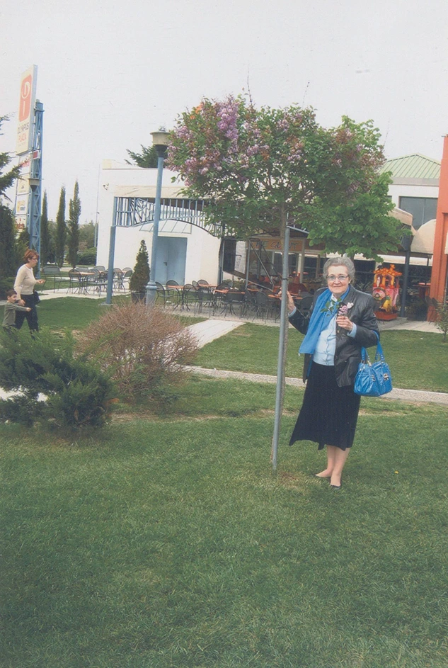
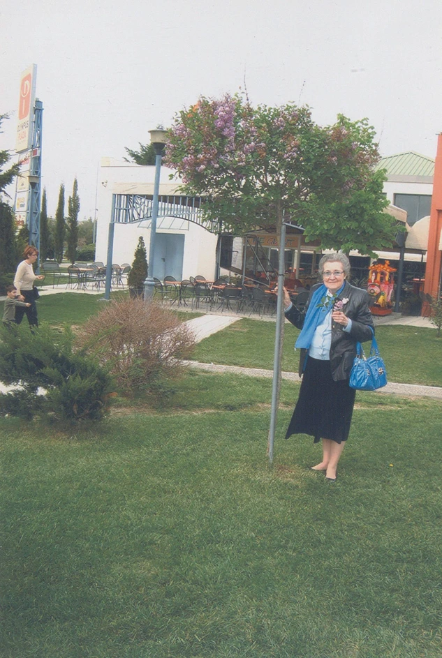

300+
Μαθητές
Η Διαδρομη
Βιογραφικό
Σπούδασε στο Μακεδονικό Ωδείο Θεσσαλονίκης με καθηγητή τον Τώνη Γεωργίου και κατόπιν στο Κρατικό Ωδείο Θεσσαλονίκης με καθηγητή τον Γεώργιο Θυμή. Εμφανίστηκε σε ρεσιτάλ και συναυλίες στη Θεσσαλονίκη και δίδαξε πιάνο στο Κρατικό Ωδείο Θεσσαλονίκης, στο Νέο Ωδείο, στο Μουσικό Κολλέγιο και στο Ωδείο Μελωδία. Είχε περισσότερους από 300 μαθητές πολλοί από τους οποίους σήμερα είναι γνωστοί μουσικοί.
 
